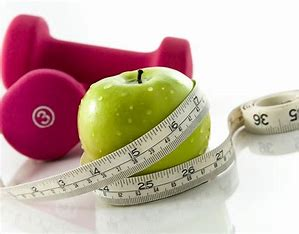

Insights into Dieting and Nutrition
Introduction: What is Dieting?
Dieting is more than just a temporary change in eating habits; it’s a structured approach to nourishing your
body based
on your health goals, needs, and preferences. Whether you're aiming to lose weight, build muscle, manage a
condition
like diabetes, or simply lead a healthier lifestyle, a well-crafted diet is essential. In essence, dieting
is
about
making intentional choices regarding food consumption to fuel your body in a way that supports your overall
wellness.
For many, the word "diet" conjures images of restrictive eating, but healthy dieting is about balance rather
than
deprivation. A good diet plan takes into account your body’s unique requirements—macronutrients (proteins,
fats,
carbohydrates) and micronutrients (vitamins and minerals)—and adapts to your lifestyle, culture, and food
preferences.
It's about making sustainable changes that you can maintain over time, rather than quick fixes or crash
diets.
Why is Dieting Important?

Dieting has profound effects on both physical and mental health. At its core, the foods you consume directly
impact your
energy levels, immune system, and even mood. Poor eating habits can lead to weight gain, low energy, weakened
immune
function, and an increased risk of developing chronic diseases such as heart disease, diabetes, and high blood
pressure.
On the other hand, adopting a balanced diet can improve digestion, skin health, mental clarity, and emotional
well-being.
Moreover, a good diet has long-term benefits, helping you maintain a healthy weight, reduce stress, and
increase
longevity. By paying attention to what and how much you eat, you're laying the groundwork for better health in
the
future. The more mindful you are of your diet, the more control you gain over your overall health.
How to Start a Diet and Stick to It?

Starting a diet can be intimidating, but it’s important to view it
as a journey, not a destination. The key to
success
lies in preparation, realistic goal-setting, and consistency. The first step is identifying your goals: Do you
want to
gain weight, lose weight, gain muscle, improve energy levels, or manage a health condition? Once you’re clear
on what
you want, you can choose a diet that aligns with those goals.
But here’s the crucial part—your diet must be enjoyable. If it feels too restrictive, chances are you won’t
stick to it.
Start small by making gradual changes. This might mean swapping out sugary snacks for fruits or reducing
portion sizes,
instead of overhauling your entire eating routine at once. Consistency is key, and small, sustainable
adjustments are
more likely to become long-term habits. Also, don’t forget to allow yourself some flexibility—occasional
indulgences are
fine and can actually help you stay committed in the long run.
Another important factor is planning. Whether you're meal prepping for the week or planning your daily food
intake,
having a strategy helps you avoid last-minute unhealthy choices. Ensure your diet plan incorporates foods you
enjoy and
offers variety to prevent boredom. Including healthy snacks can also keep you from feeling deprived.
Staying motivated can be tough, so it’s helpful to track your progress. Whether through a journal or app,
monitoring
your meals, water intake, and even physical activity can keep you accountable. Celebrate small
victories—whether it’s
fitting into a pair of jeans or having more energy throughout the day. Positive reinforcement will motivate
you to
continue on your journey.
Why Having a Diet Plan is Important
A well-structured diet plan provides clarity and direction. Without one, it’s easy to fall into the trap of
mindless
eating or indulging in convenience foods, which are often processed and high in unhealthy fats, sugars, and
additives. A
diet plan ensures you're mindful of what you eat, helping you stay on track with your goals.
Moreover, having a personalized diet plan that takes into account your specific health needs makes it easier
to achieve
optimal results. If you’re managing a health condition, for instance, a diet tailored to your needs can
prevent
flare-ups and improve your overall well-being. A plan also helps to balance the right portions, preventing
overeating or
undereating, and it encourages you to include a variety of nutrients essential for maintaining good health.
Conclusion
Dieting is a personal journey toward better health, and it should be approached with patience, flexibility,
and
consistency. The key to success lies in creating a plan that fits your lifestyle and preferences, while still
offering
the necessary nutrients your body needs. Whether you're striving for weight management, improved energy, or
better
long-term health, starting with a well-structured diet plan gives you the foundation for success. It’s not
about
perfection, but rather progress—every small step you take will bring you closer to your health goals.